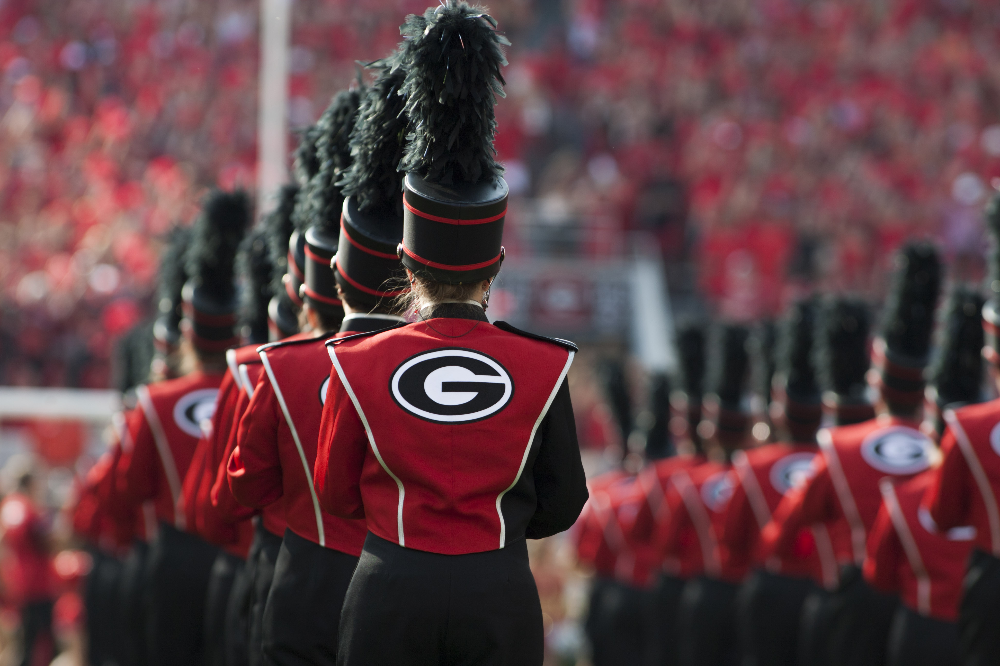
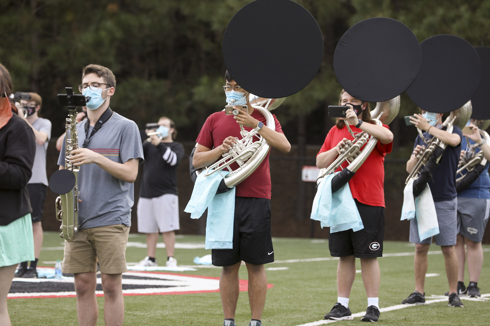

The University of Georgia Redcoat Marching Band was founded in 1905 and is one of the largest and most well-known organizations on it's campus. For more information about the history of the Redcoat Band visit this page. 
Ultimately, coming to college as a first-generation student, with very few friends from high school, the Redcoat band is arguably one of the best things that could have ever happened to me. Walking into band camp the week before classes start, it's almost like you have a little group of built-in best friends. It seems daunting to be part of such a massive organizations made up of 430 UGA students in total. However, since we are divided into our instrumental sections, you really only have to introduce yourself to 15-30 people depending on your instrument. From the first moment I stepped on to Redcoat field I knew I had made the right choice coming to UGA. Something about the endless traditions, the incredible atmosphere, and the even more incredible people make being a part of the Redcoat band my most prized accomplishment.
Being a part of the RCB automatically brings you incredible opportunities that many would consider once in a lifetime. I have been able to travel with 430 of my closest friends, some our destinations in the past included Pasadena, California, New Orleans, Loiusiana, and St. Augustine, Florida. The are some trips that we take each year and other trips that vary depending on the football schedule and performance. We perform at 2 different high shcool marching exhibitions across the state of Georgia each fall. We also travel with the football team for any championship or post-season bowl games. Lastly, there is a special sub-section of Redcoats called the "Derbies" who travel to away games with the football team as well as do special gigs across the country (in 2019 we travelled to New York City!).
Here are the trips I have been on so far!
| Yearly Trips | Special Trips | Derbies Trips |
|---|---|---|
| FL/GA Game (St. Augustine, FL) | SEC Championship Game (Atlanta, GA) | UGA/Auburn Game (Auburn, Alabama) |
| Exhibition Performances (East Cobb and Paulding County) | Allstate Sugar Bowl (New Orleans, LA) | Live performance in New York, NY |
The most important and difficult part of RCB is the practices. It is hot, exhausting, and frustrating at times, but it can definitely still be fun with the right attitude! I love RCB rehearsals, especially in the fall when the weather begins to cool down. As long as you come prepared with your instrument, music, and some H2O it can actually be a lot of fun! We have plenty of Friday night rehearsal traditions before games including a party on the 50-yard line where we dance, chant, and get hyped up for the game on Saturday. We also have section traditions of going to get ice cream after rehearsal. These things are what make Redcoats memorable even outside of the trips and football games. 